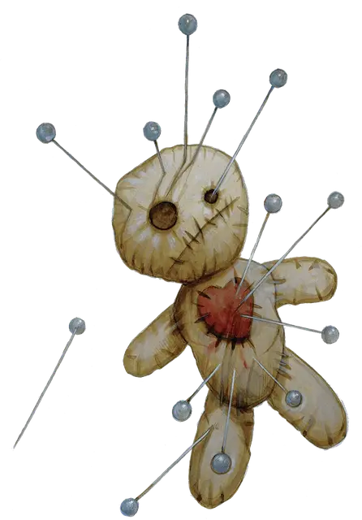

Преследуемый
Haunted One

Вас преследует нечто столь ужасное, что вы не отваживаетесь даже говорить об этом. Вы пытались похоронить это и сбежать от него, но все попытки были тщетны. Чем бы оно ни было, то, что преследует вас нельзя убить мечом или изгнать заклятиями. Оно может являться к вам в виде тени на стене, кровавым кошмаром, воспоминанием, которое отказывается умирать или дьявольским шёпотом во тьме.
Ноша берёт своё, изолируя вас от большинства людей и заставляя сомневаться в здравии вашего рассудка. Вы должны найти способ, победить это прежде, чем оно уничтожит вас.
Владение навыками: Выберите два навыка из следующих: Магия, Расследование, Религия или Выживание.
Языки: Выберите два языка, один из которых должен быть Бездны, Небожителей, Глубинная речь, Драконий, Инфернальный, Первичный, Сильван или Подземный
Снаряжение: Набор охотника на монстров (см. врезку), одна безделушка особой важности (выберите её сами или при помощи броска определите случайную из таблицы Готические Безделушки), комплект обычной одежды, и 1 см
Набор охотника на монстров (33 зм)
Включает в себя сундук, фомку, молоток, три деревянных кола, святой символ, святую воду (фляга), кандалы, стальное зеркало, масло (фляга), трутницу и 3 факела.
Умение: Сердце тьмы
Те, кто взглянет вам в глаза, сможет увидеть, что вы встречались с невообразимым ужасом и что вам не чужда тьма. Хотя они могут бояться вас, обыватели будут вежливы и сделают всё, чтобы помочь вам.
Если вы не выказывали признаков угрозы для них, они даже могут взяться за оружие, чтобы драться вместе с вами, если вы окажетесь лицом к лицу с врагом в одиночестве.
Переломное событие
Прежде чем стать искателем приключений, ваш жизненный путь определяло один тёмный момент, одно судьбоносное решение или одна трагедия. Теперь вы чувствуете как тьма грозит поглотить вас и вы боитесь, что надежды на спасение больше нет. Выберите переломное событие, которое преследует вас или сделайте бросок по таблице «Переломные события».
Переломное событие
| к10 | Событие |
| 1 | Монстр, убивший дюжины невинных людей сохранил вам жизнь и вы не знаете почему. |
| 2 | Вы были рождены под тёмной звездой. Вы чувствуете, как она наблюдает за вами, холодно и отстранённо. Иногда она взывает к вам в чернейшие ночи. |
| 3 | Призрак, преследовавший вашу семью поколениями теперь преследует вас. Вы не знаете, чего он хочет, но знаете, что он не оставит вас в покое. |
| 4 | В вашей семейной истории есть практиковавшие тёмное искусство. Однажды, играя, вы почувствовали хватку чего-то ужасного на вашей душе, после чего вы сбежали. |
| 5 | Они [oni] забрал вашего родного брата или сестру одной холодной, тёмной ночью и вы были не в силах ему помешать. |
| 6 | Вы были прокляты ликантропией, но позже исцелились. Теперь вас преследуют невинные, убитые вами. |
| 7 | Карга похитила и вырастила вас. Вы сбежали, но карга всё ещё магически связана с вами и наполняет ваш разум злыми мыслями. |
| 8 | Вы открыли мистический том и увидели вещи, не укладывающиеся в здравый рассудок. Вы сожгли ту книгу, но слова и картинки из неё навсегда въелись в вашу психику. |
| 9 | Демон овладел вами в детстве. Вас держали под замком, но вы сбежали. Демон всё ещё внутри вас, но вы пытаетесь держать его взаперти. |
| 10 | Вы творили ужасные вещи, чтобы отомстить за убийство возлюбленного. Вы стали монстром и это преследует вас в кошмарах. |
Персонализация
Вы научились жить с ужасом, который вас преследует. Вы привыкли выживать и сильно оберегать тех, кто привносит свет в вашу тёмную жизнь.
| к8 | Черта характера |
| 1 | Я не бегу от зла. Зло бежит от меня. |
| 2 | Я люблю цитировать и учить поэзию. Она успокаивает меня и приносит мимолётные моменты радости. |
| 3 | Я трачу деньги свободно и живу полнейшей жизнью, зная, что завтра я могу умереть. |
| 4 | Я живу ради азарта охоты. |
| 5 | Я не говорю о том, что терзает меня. Предпочитаю не взваливать на других своё проклятие. |
| 6 | Я ожидаю опасности за каждым углом. |
| 7 | Я отказываюсь становиться жертвой и не позволю другим ими становиться. |
| 8 | Я не верю в высшие силы. |
| к6 | Идеал |
| 1 | Я пытаюсь помогать другим нуждающимся, не взирая на личную цену. (Добро) |
| 2 | Я остановлю духов, что преследуют меня или погибну в попытках сделать это. (Любое) |
| 3 | Я убиваю монстров, чтобы сделать мир более безопасным и чтобы изгнать моих собственных демонов. (Добро) |
| 4 | У меня есть тёмное призвание, которое ставит меня выше закона. (Хаос) |
| 5 | Я люблю узнать возможности и слабости своего врага прежде, чем бросаться в бой. (Закон) |
| 6 | Я монстр уничтожающий других монстров и всё, что становится у меня на пути. (Зло) |
| к6 | Привязанность |
| 1 | Я записываю свои мысли и открытия в дневник. Мой дневник – моё наследие. |
| 2 | Я пожертвую своей жизнью и душой, чтобы защитить невинного. |
| 3 | Мои мучения лишили меня любимого человека. Я жажду вернуть утраченную любовь. |
| 4 | Ужасная вина гложет меня. Я надеюсь, что смогу отыскать искупление своими действиями. |
| 5 | Во мне зло и я чувствую его. Оно никогда не должно вырваться наружу. |
| 6 | У меня есть ребёнок, которого необходимо защищать. Я должен сделать мир более безопасным местом для него (неё). |
| к6 | Слабость |
| 1 | У меня есть определённый ритуал, который я должен выполнять каждый день. Я никогда не должен его нарушать. |
| 2 | Я предполагаю о людях наихудшее. |
| 3 | Я не испытываю сострадания к мёртвым. Им-то повезло. |
| 4 | У меня зависимость. |
| 5 | Я торговец роком и унынием, живущий в мире без надежды. |
| 6 | Я говорю с духами, которых никто больше не может видеть. |